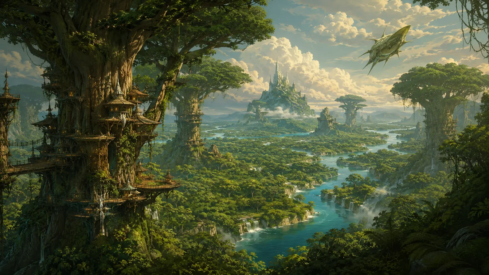

Heimatwelt der Lykaner
Fenwyld
Wo jeder Weg wächst und jeder Fluss einen Namen trägt.
01 · Die Welt
Grün bis zum Horizont
Fenwyld kennt keine Wüste und keine tote Ebene. Selbst seine Sümpfe sind voller Leben.
Dichte Wälder bedecken den Planeten. Breite Flüsse durchziehen das Blättermeer und schaffen an ihren Ufern die wenigen offenen Räume. Der Gweyras ist der mächtigste von ihnen; an seiner Mündung liegt Caer Gweyra. Aldúvin und Duvrath verbinden kleinere Rudelgebiete mit den abgelegenen Sumpf- und Waldregionen.
„Wer den Fluss nicht hört, kennt den Weg nicht.“
Rudelspruch vom Gweyras
02 · Caer Gweyra
Die Stadt in den Kronen
Caer Gweyra wächst in die Höhe. Plattformen, Stege und Hallen liegen zwischen gewaltigen Stämmen. Oben befinden sich die Kronen mit Tempeln und Ritualstätten. Darunter liegt der Ringplatz, an dem der Rat der Schamanen tagt. Ambosshain, Steige und Wurzelfelder folgen dem Baum bis hinab in die feuchte Erde.
Die Grenzen zwischen Wohnen, Arbeiten und Glauben bleiben fließend. Ein Schmied lebt nahe seiner Werkstatt, eine Jägerin nahe der äußeren Stege. Die Mutter führt nicht aus einem Palast, sondern aus einer Stadt, deren Ordnung jeder täglich durchquert.
03 · Jenseits der Hauptstadt
Rudel am Wasser
Dúnmara handelt mit Harzen und Farben. Duvrathan liegt tief in den südlichen Sümpfen. Aeldun ist für Heiler und Kräuterkundige bekannt, während Bryn Ossa den Kontakt zu den großen Siedlungen bewusst gering hält.
Fenwyld ist damit keine einzelne Stadt mit Wildnis darum herum. Der Planet ist ein Geflecht aus Rudelgebieten, Flusswegen und heiligen Orten – dezentral, aber durch Gaya und die Erinnerung an zwei Unterwerfungen verbunden.